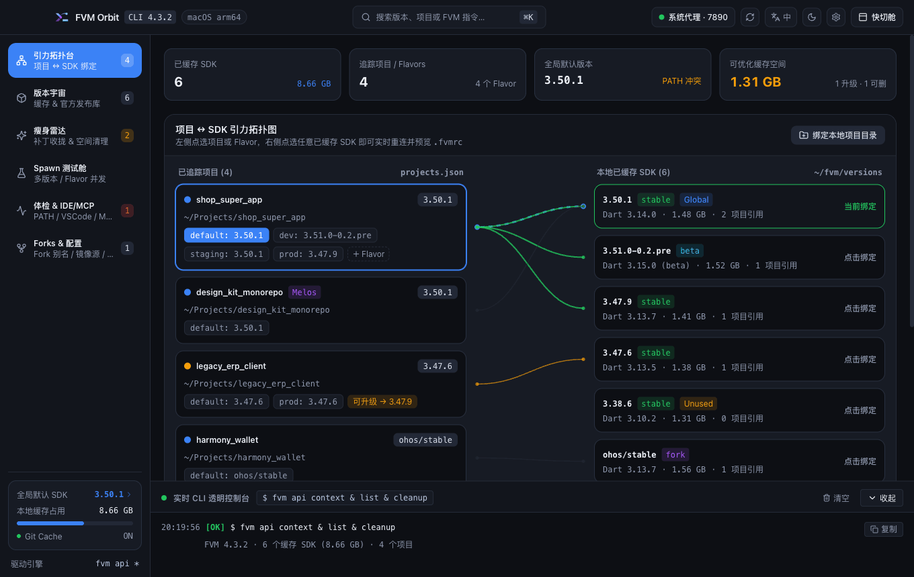

Flutter 多版本管理，
从此一目了然
FVM Orbit 是开源项目 btwld/fvm 的轻量级原生桌面端与菜单栏伴侣。基于 Tauri v2 与 Rust Tokio 异步引擎直连本机 fvm api，将项目绑定、Flavor 切换、同系补丁收拢与多版本并发测试化作直观可控的图形工作台。

原生协同 btwld/fvm，绝不做黑盒封装
FVM Orbit 不自建版本格式、不替代官方 CLI，而是直接把 FVM 4.x 的全部工程能力透明呈现给你。
直连 fvm api * 结构化引擎
Rust 后端通过异步子进程直接调用 fvm api context / list / releases / project / cleanup --compress，结合后台目录体积核算，不依赖脆弱的终端文本正则解析。
透明流式控制台 & 随时中止
所有 fvm install / use / cleanup / spawn 均经 Tauri v2 Channel 逐行流式输出到底部可拖拽调高的控制台，配 CancellationToken 支持一键中止下载或测试任务。
文件监听双向同步
通过 notify 监听 ~/fvm 缓存目录与项目注册表；你在 VS Code 或系统终端里手动敲 fvm use，桌面端拓扑图与菜单栏状态也会自动刷新。
六大核心工作舱 + 原生 macOS 细节
覆盖从日常切版本、清缓存到升级回归验证、IDE 与 AI Agent 环境对齐的完整工作流。
引力拓扑台
左侧追踪项目与 Flavor 槽位、右侧本地缓存 SDK、中间像素级 DOM 测距 SVG 贝塞尔连线。原生目录弹窗绑定项目，切换前实时预览 .fvmrc 与精确 CLI 参数。
版本宇宙
实时拉取官方 Stable / Beta / Dev 发布版与配套 Dart 版本，支持任意版本号、Commit Hash 与自定义 Fork 直装，支持 --no-setup、设为全局与在 Finder 打开。
瘦身雷达
分段条透视每个 SDK 与 cache.git 磁盘占用；深度整合 FVM 4.3 同系补丁收拢建议（零下载迁移旧补丁项目），自动保护升级目标并一键清理 removable 闲置版本。
Spawn 并发测试舱
无需切来切去，利用 Rust Tokio 同时在多个 Flutter SDK 或 Flavor 上并行执行 fvm spawn / flavor / exec，并排对比通过状态与耗时。
环境体检与 IDE / MCP 联动
自动检测登录 Shell $PATH 是否被旧 Flutter 遮蔽，支持备份并安全写入 ~/.zshrc；巡检 VS Code / IntelliJ 软链，一键复制 Dart MCP Server 配置 JSON。
菜单栏托盘 & 双版 Dock 图标
常驻 macOS 顶栏托盘 1 秒切换全局 SDK；支持 ⌘K 命令面板、跟随系统/浅色/深色三态主题、自定义 Fork 镜像源，以及深浅双版 Dock 图标即时切换。
FVM CLI → FVM Orbit 指令对照
熟悉 FVM 命令行的开发者可以零学习成本上手，每个界面操作都一一对应标准 FVM 指令。
| FVM CLI 指令 | 在 FVM Orbit 中的位置 | 增强能力 |
|---|---|---|
fvm use <ver> [--flavor] |
引力拓扑台 | SVG 连线可视化绑定、Flavor 创建、.fvmrc 实时预览与 Flag 勾选 |
fvm install / fvm releases |
版本宇宙 | 渠道精选卡片、Dart 配对检索、Commit Hash / Fork 直装与中止下载 |
fvm global [--unlink] |
侧边栏底部 / 菜单栏托盘 / 版本宇宙 | 1 秒快捷切换全局默认 SDK，支持取消全局链接 |
fvm cleanup --remove-unused |
瘦身雷达 | 磁盘分段占用图、同系补丁一键收拢迁移、区分受保护与可移除池 |
fvm spawn / fvm flavor / fvm exec |
Spawn 并发测试舱 | 多版本 Tokio 并发执行矩阵、实时流式日志卡片与耗时对比 |
fvm doctor |
体检 & IDE/MCP | 自动侦测 $PATH 冲突并安全修补 ~/.zshrc、一键复制 Dart MCP JSON |
fvm fork / fvm config |
Forks & 配置 | 自定义 Fork 仓库管理、清华镜像快捷切换、Git Cache 与 Dock 图标外观 |
快速开始
确保本机已安装 btwld/fvm，两分钟即可在本地运行或打包原生 FVM Orbit.app。
1. 安装 btwld/fvm CLI
推荐使用 Homebrew 安装最新版 FVM 4.x。
brew tap leoafarias/fvm brew install fvm fvm --version
2. 克隆并启动开发版
需已安装 Node.js 20+、pnpm 与 Rust 工具链。
git clone https://github.com/hanklee9820/fvm-orbit.git cd fvm-orbit pnpm install pnpm tauri:dev
3. 打包原生 macOS .app
产出 Apple Silicon 原生应用包，可直接拖入「应用程序」。
pnpm tauri:build open "src-tauri/target/release/bundle/macos/FVM Orbit.app"